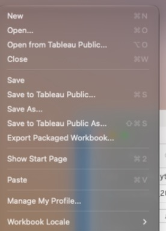
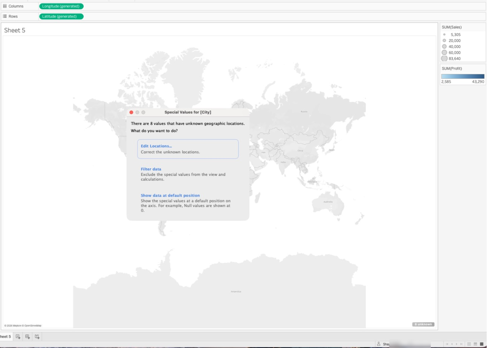
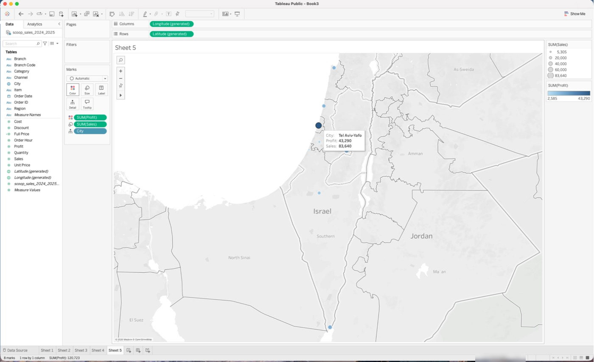
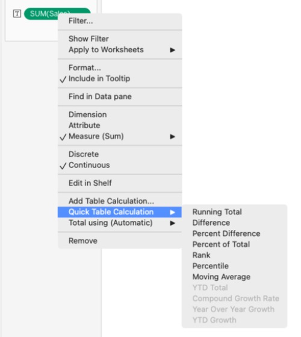
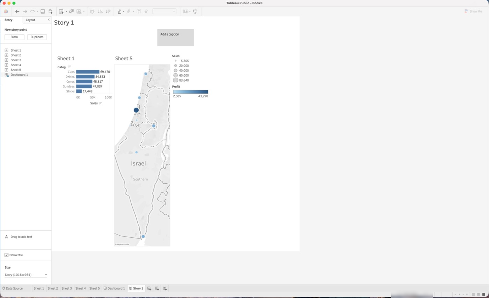

?teacher=1 בכתובת הדף: מה לומר, איפה לעצור ומה לבדוק לפני שממשיכים.איך עובדים עם הפרויקטים
מה נבנה במודול הזה: חמישה פרויקטים, מדשבורד ראשון ועד סיפור שמתפרסם ומוטמע בדף אינטרנט. אחריהם בוחן סיום, מפת מיומנויות ודף סיכום. מתחיליםבוניםמקצועניםמפתחים
מה צריך מוכן: Tableau Public מותקן, חוברת הקורס scoop-course.twbx ממודול 1, הקובץ scoop_sales_2024_2025.csv, וקבצי מסעדת יבגני (yevgeni_orders.csv והשאר) לפרויקט 4. כל פרויקט רץ ב-Tableau Public בלבד. פרויקטים 1 עד 4 נשמרים במחשב. רק פרויקט 5 מתפרסם, והוא מפרסם את נתוני Scoop & Go, שהם נתונים בדויים.
עד עכשיו עשיתם תרגילים קצרים. כאן בונים עבודה שלמה, מהשאלה העסקית ועד תוצר שאפשר להגיש. בכל פרויקט יש נקודות ביקורת, כלומר מספרים שחייבים לצאת לכם. אם המספר לא יוצא, מתקנים לפני שממשיכים.
scoop-course.twbx כבר מכיל את M1 Bars, ובמודול הזה נוספים לו P1 Category, P1 Trend ועוד.| # | פרויקט | רמה | נתונים | מה בונים | איפה שומרים | מודולים |
|---|---|---|---|---|---|---|
| 1 | הדשבורד הראשון | מתחילים | Scoop & Go | 3 גיליונות, מסנן אחד, דשבורד | חוברת הקורס | 3, 4, 6 |
| 2 | דוח מנהל | בונים | Scoop & Go | כרטיסי KPI, מפה, פרמטר, פעולות | חוברת הקורס | 7, 8, 10 |
| 3 | מה קרה בבאר שבע? | מקצוענים | Scoop & Go | חקירה עם LOD וחישובי טבלה | חוברת הקורס | 9, 10 |
| 4 | ממסד נתונים ל-Tableau | מקצוענים | מסעדת יבגני | SQL, CSV, Relationships, דשבורד משלוחים | yevgeni-model.twbx ממודול 11 | 11, 15 |
| 5 | מתי קונים גלידה: סיפור והטמעה | מפתחים | Scoop & Go | סיפור של 5 נקודות, פרסום, הטמעה | חוברת סיפור חדשה, ואז Tableau Public | 14, 16 |
- פרויקט 1: מסך אחד שעונה על מה, מתי ואיפה.
- פרויקט 2: מוסיפים חישובים, פרמטר, מפה ופעולות.
- פרויקט 3: חוקרים ושואלים "בהשוואה למה?".
- פרויקט 4: מביאים את הנתונים ממסד, בלי חיבור ישיר.
- פרויקט 5: מספרים סיפור על Scoop & Go, מפרסמים ומטמיעים בדף משלכם.
הרגל השמירה של המודול
Tableau Public מגביל את מספר החוברות החדשות שאפשר לשמור מקומית בתקופה מסוימת. שמירה חוזרת של אותה חוברת לא מוגבלת. לכן עובדים בשלוש חוברות בלבד: חוברת הקורס לפרויקטים 1 עד 3, yevgeni-model.twbx לפרויקט 4, וחוברת סיפור אחת חדשה לפרויקט 5.
פותחים את חוברת הקורס ושומרים נכון.
File>Open...ובחרוscoop-course.twbx. למה: כל הגיליונות של הקורס כבר שם, וגם החיבור לנתונים.- אם אין לכם חוברת כזו: חברו את
scoop_sales_2024_2025.csv(Text file), ואזFile>Save As...בשםscoop-course.twbx. למה: זו הפעם היחידה שיוצרים אותה. - לחצו על סמל
New Worksheetבשורת הלשוניות למטה. קליק ימני על הלשונית החדשה >Rename Sheet...ותנו שםP1 Check. למה: שמות עם P1 עד P3 מפרידים את הפרויקטים מהגיליונות של המודולים. - מהתפריט:
File>Save. למה: זו שמירה של אותה חוברת, והיא לא צורכת שמירה חדשה.
תוצאה צפויה: שם החלון בראש המסך הוא scoop-course, יש לשונית P1 Check, והלשוניות של המודולים הקודמים עדיין שם.

File בגרסה שצולמה. Save ו-Save As... שומרים במחשב. Save to Tableau Public... ו-Save to Tableau Public As... מפרסמים לאתר. שימו לב: הקיצור ⌘S שייך ל-Save to Tableau Public..., לא לשמירה מקומית.לוחצים ⌘S כמו בכל תוכנה ומצפים לשמירה במחשב. ב-Tableau Public הקיצור הזה פותח את Save to Tableau Public..., כלומר פרסום לאתר. מה עושים: לשמירה מקומית בוחרים File > Save מהתפריט. ועוד מלכודת: בונים את כל הדשבורד ורק בסוף בודקים מספרים. אחרי כל שלב משווים לנקודת הביקורת. טעות שמתגלה בשלב 2 זולה בהרבה מטעות שמתגלה בשלב 6.
בעבודה אמיתית יש קובץ עבודה אחד לכל פרויקט, עם שמות גיליונות מסודרים, וגיבוי בתיקייה נוספת. העתקה של קובץ ה-twbx לתיקייה אחרת נעשית מחוץ ל-Tableau, ולכן לא נוגעת במגבלת השמירות.
פרויקט 1: הדשבורד הראשון
רינה, מנהלת הרשת, רוצה מסך אחד לישיבה: מה נמכר, מתי ובאיזה סניף. ואם אפשר, שתוכל להסתכל על אזור אחד.
הדמיה סכמטית של הדשבורד המבוקש
שלב 1: בדיקת בסיס.
- בחוברת הקורס עברו ללשונית
P1 Checkשיצרתם בסעיף הקודם. למה: כל הפרויקט על אותו מקור נתונים. - גררו את
Salesמחלונית הנתונים (הכותרת שלה היאTables) אלTextבכרטיסMarks. למה: סכום אחד לכל הקובץ. - גררו גם את
scoop_sales_2024_2025.csv (Count)אלText. בגרסאות ישנות השדה נקראNumber of Records. למה: ספירת השורות בודקת שכל הקובץ נטען. File>Save. למה: נקודת שמירה ראשונה.
תוצאה צפויה: סימן אחד (1 mark בשורת המצב) עם Sales 236,821 (המדויק: 236,820.9) ו-6,575 שורות.
שלב 2: שלושה גיליונות.
- גיליון חדש בשם
P1 Category:Categoryל-Rows,Salesל-Columns. בסרגל הכלים לחצוSort Descending. למה: דירוג קטגוריות, הגדולה למעלה. - לחצו
Show Mark Labelsבסרגל הכלים. למה: המספרים מופיעים על העמודות, ואפשר להשוות לנקודת הביקורת בלי לרחף. - גיליון חדש בשם
P1 Trend:Order Dateל-Columns. Tableau שמהYEAR(Order Date). קליק ימני על הפיל ובחרו אתMonthהשני, זה שבקבוצת ערכי התאריך (ליד הדוגמהMay 2015). הפיל נהיה ירוק. למה: חודש רציף הוא ציר זמן של 24 חודשים. - גררו
Salesל-Rows. למה: קו של מכירות לפי חודש. - גיליון חדש בשם
P1 Branch:Branchל-Rows,Salesל-Columns,Sort Descending. למה: השוואה בין סניפים. File>Save.
תוצאה צפויה: P1 Category: 5 עמודות, Cups 69,470, Drinks 54,553, Cones 48,317, Sundaes 47,037, Sticks 17,443 (המדויקים: 69,470.0, 54,553.3, 48,317.0, 47,037.2, 17,443.4). P1 Trend: 24 marks, שיא באוגוסט 2025 (23,259.9, בטולטיפ 23,260), שפל בפברואר 2025 (4,097.0). P1 Branch: 9 עמודות, ראשונה Tel Aviv Dizengoff 44,194.1, אחרונה Ashdod Beach Pop-up 5,304.5.

P1 Trend כשהוא נכון: פיל ירוק MONTH(Order Date) על Columns, SUM(Sales) על Rows, ובשורת המצב 24 marks. הטולטיפ על הנקודה הגבוהה: August 2025, Sales 23,260. חלונית הנתונים מסודרת תחת Tables: ממדים מעל הקו הדק, מדדים מתחתיו.שלב 3: מסנן אחד לשלושת גיליונות P1.
- בגיליון
P1 BranchגררוRegionל-Filters, השאירו את כל הערכים מסומנים,OK. למה: מתחילים מכל הרשת. - קליק ימני על הפיל
RegionבמדףFilters>Show Filter. למה: הצופה צריך ידית לבחירת אזור. - שוב קליק ימני על הפיל >
Apply to Worksheets>Selected Worksheets..., וסמנו אתP1 Category,P1 Trendו-P1 Branch. למה: בחוברת הקורס יש גם גיליונות של מודולים קודמים.All Using This Data Sourceהיה מסנן גם אותם. - בכרטיס המסנן השאירו רק
South. למה: בדיקה שהמסנן באמת חל על שלושת הגיליונות.
תוצאה צפויה: סך המכירות בדרום 55,575.4. ב-P1 Branch נשארות 3 עמודות: Eilat Promenade 31,473.7, Beer Sheva Grand Mall 18,797.2, Ashdod Beach Pop-up 5,304.5. ב-P1 Category: Cups 16,648.4, Sundaes 12,091.0, Drinks 11,531.8, Cones 11,270.5, Sticks 4,033.7. בגיליון M1 Bars של מודול 1 לא השתנה כלום (עדיין Cups 69,470). בסוף החזירו את המסנן ל-(All).
שלב 4: דשבורד ושמירה.
- לחצו על סמל
New Dashboardבשורת הלשוניות, ושנו את שם הלשונית ל-P1 Dashboard. למה: דשבורד הוא לשונית נפרדת שמחזיקה גיליונות. - בחלונית
Dashboard, תחתSize, בחרוFixed sizeורוחב 1000, גובה 800. למה: ברירת המחדל היא טווח, וכאן כולם בודקים אותו גודל. - גררו את
P1 TrendמרשימתSheetsלחלק העליון של הקנבס, ואתP1 Categoryו-P1 Branchמתחתיו, זה לצד זה. למה: קודם הזמן, אחר כך הפירוט. - בדקו שיש כרטיס
Regionאחד. אם הופיעו שניים, בחרו את הכפול ולחצו על x בסרגל הקטן שבקצה שלו. אם אין אף אחד, בחרו אתP1 Branch, פתחו את החץ ▾ בסרגל הקטן שלו ובחרוFilters>Region. למה: מסנן אחד, במקום אחד. - סמנו
Show dashboard titleבתחתית החלונית, לחצו פעמיים על הכותרת וכתבו "Scoop & Go: מכירות 2024 עד 2025". למה: הצופה צריך לדעת מה הוא רואה. File>Save. סגרו את Tableau ופתחו שוב אתscoop-course.twbx. למה: בדיקה שהשמירה עבדה והנתונים בתוך הקובץ.
תוצאה צפויה: הדשבורד נפתח כולו ב-1000 על 800, בחירת South משנה את שלושת הגיליונות (Branch: 3 עמודות, 55,575.4 יחד), ואחרי הפתיחה מחדש P1 Trend עדיין מראה 24 marks.
רשימת עיצוב: כותרת לכל גיליון, מספרים עם פסיק אלפים, אותו צבע לאותו דבר, שמות גיליונות ברורים, בלי חפיפה בין אובייקטים, שלוש שורות סיכום עם מספר בכל אחת.
| קריטריון | נקודות | ציון |
|---|---|---|
| בדיקת בסיס: 236,820.9 ו-6,575 | 10 | |
| P1 Category ממוין, חמישה ערכים מדויקים | 15 | |
| P1 Trend רציף: 24 סימנים, שיא 23,259.9, שפל 4,097.0 | 15 | |
| P1 Branch: 9 עמודות, ראשונה ואחרונה נכונות | 10 | |
| מסנן חל על שלושת גיליונות P1 בלבד: South נותן 55,575.4 | 20 | |
| פריסת דשבורד, כרטיס מסנן אחד, ורשימת עיצוב | 15 | |
| נשמר בחוברת הקורס (File > Save) ונפתח מחדש | 5 | |
| שלוש שורות סיכום עם מספרים | 10 |
Month ירוק נותן 24 סימנים, Month כחול נותן 12 ומאחד שנים. אם יש לכם 12 סימנים, בחרתם את Month מהקבוצה הראשונה בתפריט. עוד מלכודת: All Using This Data Source בחוברת הקורס מסנן גם את גיליונות המודולים הקודמים. בוחרים Selected Worksheets.... וקובץ twb בלי x נפתח אצל חבר בלי נתונים.
דשבורד ראשון טוב עונה על שלוש שאלות בלי הסברים: מה, מתי, איפה. כל מה שלא עונה על אחת מהן מוציאים.
איזה עוד מסנן הייתם מוסיפים לרינה, ולמה דווקא אותו?
הרחבות: צבע לפי Region בגיליון P1 Branch, פריסת טלפון (Device Preview, ואז Phone), טולטיפ מותאם.
פרויקט 2: דוח מנהל
רינה רוצה דוח שפותחים בכל יום שני: ארבעה מספרים בולטים, מפה, גרף שאפשר להחליף בו מדד, ולחיצה על סניף שמעדכנת את השאר.
Sales 2025 על Text, והוא מציג 129,773.שלב 1: שדות מחושבים וכרטיסי KPI.
Analysis>Create Calculated Field..., שםSales 2025, נוסחהSUM( IF YEAR([Order Date]) = 2025 THEN [Sales] END ),OK. צרו באותה דרךSales 2024. למה: צבירה של שנה אחת, בלי מסנן שמשנה את כל הגיליון.- צרו
Sales Change %:IF ZN([Sales 2024]) = 0 THEN NULL ELSE ([Sales 2025] - [Sales 2024]) / [Sales 2024] END. למה: סניף חדש בלי 2024 לא יוצר חלוקה באפס. - צרו
Margin 2025:SUM( IF YEAR([Order Date]) = 2025 THEN [Profit] END ) / [Sales 2025]. למה: אחוז הרווח של השנה האחרונה. - צרו
Status:IF ISNULL([Sales Change %]) THEN "New branch" ELSEIF [Sales Change %] < -0.1 THEN "Alert" ELSE "OK" END. למה: המנהל רואה מילה אחת במקום לחשב. - לכל אחד מארבעת השדות: גיליון חדש בשם
P2 KPI Sales,P2 KPI Change,P2 KPI Margin,P2 KPI Status, עם השדה עלText. ב-Sales Change %וב-Margin 2025: קליק ימני על השדה בחלונית הנתונים >Default Properties>Number Format...>Percentage. למה: 0.2123 קשה לקרוא, 21.23% לא. File>Save.
תוצאה צפויה: Sales 2025 129,773.3 (בתווית 129,773), שינוי +21.23%, Margin 49.92%, Status OK. בכל גיליון 1 mark.
שלב 2: פרמטר שמחליף מדד.
- לחצו על החץ הקטן ליד תיבת החיפוש בחלונית הנתונים >
Create Parameter....Name:Pick Measure,Data type:String,Allowable values:List. בטבלה (Click to add) הקלידו Sales, Profit, Quantity.OK. למה: פרמטר הוא ערך אחד שהצופה בוחר. לבד הוא לא משנה כלום. - בתחתית חלונית הנתונים הופיע
Parameters. קליק ימני עלPick Measure>Show Parameter. למה: רשימת בחירה על המסך. - צרו
Chosen Measure:CASE [Pick Measure] WHEN "Sales" THEN SUM([Sales]) WHEN "Profit" THEN SUM([Profit]) WHEN "Quantity" THEN SUM([Quantity]) END. למה: השדה הזה קורא לפרמטר. כל הענפים צבירה, אחרת Tableau מסרבת. - גיליון
P2 Bars:Branchל-Rows,Chosen Measureל-Columns,Sort Descending. גררו גםCityל-Detail. למה: City יידרש לפעולת ההדגשה בשלב 4. - החליפו בפרמטר בין שלושת הערכים, ואז
File>Save.
תוצאה צפויה: 9 עמודות. Tel Aviv Dizengoff: Sales 44,194.1, Profit 22,979.1, Quantity 2,128. אחרונה Ashdod Beach Pop-up: 5,304.5, 2,585.0, 248.
שלב 3: מפה וציר זמן.
- גיליון חדש
P2 Map. לחיצה כפולה עלCity(סמל הגלובוס). למה: Tableau מזהה ערים ובונה מפה עםLongitude (generated)ו-Latitude (generated). - הסתכלו בפינה הימנית התחתונה של המפה. אם יש תג
8 unknown, לחצו עליו >Edit Locations.... למה: ברירת המחדל שלCountry/Regionהיא United States, ולכן אף עיר ישראלית לא מזוהה. - בחלון
Edit Locationsפתחו אתCountry/Region, בחרוFixedואזIsrael.OK. למה: עכשיו Tableau מחפש את הערים בישראל, וכל השמונה מתאימות (Beer Sheva מתאים ל-Be'er Sheva, Haifa ל-Hefa). - גררו
Chosen Measureל-Size. למה: גודל העיגול עוקב אחרי הפרמטר. - גיליון חדש
P2 Trend:Order Dateל-Columnsכ-Month רציף (ירוק),Chosen Measureל-Rows.File>Save.
תוצאה צפויה: לפני התיקון: 8 unknown ומפת עולם בלי סימנים. אחרי התיקון: מפת ישראל ו-8 marks. Tel Aviv-Yafo הוא סימן אחד לשני סניפים: Sales 83,640.1 (בטולטיפ 83,640). בציר הזמן 24 סימנים, ובמצב Sales השיא 23,259.9. אם תיקנתם כבר את המיקומים במודול 7 באותה חוברת, ייתכן שתראו 8 marks מיד, כי התיקון נשמר עם מקור הנתונים.
- לחיצה כפולה על City: מפת עולם, אין סימנים, ובפינה
8 unknown. - לחיצה על התג פותחת
Special Values for [City]. בוחריםEdit Locations.... - הבעיה:
Country/Regionהוא United States. Jerusalem יוצאת Ambiguous, והשבע האחרות Unrecognized. - בוחרים
FixedואזIsrael: כל השמונה מתאימות. Beer Sheva מתאים ל-Be'er Sheva. - אחרי
OK: מפת ישראל,8 marks, ו-Tel Aviv-Yafo עם Sales 83,640 ו-Profit 43,290.

8 unknown בפינה הימנית התחתונה, ואחרי לחיצה עליו החלון Special Values for [City] עם Edit Locations..., Filter data ו-Show data at default position.
Country/Region > Fixed > Israel: מפת ישראל עם 8 marks. בצילום, Sales על Size ו-Profit על Color. הטולטיפ של Tel Aviv-Yafo: Profit 43,290, Sales 83,640. אצלכם על Size יהיה Chosen Measure.שלב 4: דשבורד ופעולות.
New Dashboard, שםP2 Dashboard,Size>Fixed size1200 על 900. למה: גודל קבוע לבדיקה.- גררו את ארבעת גיליונות ה-KPI לשורה העליונה, את
P2 MapואתP2 Barsזה לצד זה באמצע, ואתP2 Trendלמטה. בדקו שרשימת הבחירה שלPick Measureמופיעה (אם לא: ▾ שלP2 Bars>Parameters>Pick Measure). למה: קודם המספרים, אחר כך הפירוט. - בחרו את
P2 Barsבדשבורד ולחצו על סמל המשפך בסרגל הקטן שלו (Use as Filter). למה: לחיצה על סניף תסנן את שאר הגיליונות. Dashboard>Actions.... בחרו את פעולת הסינון שנוצרה,Edit..., ובאזור היעד הורידו את הסימון מ-P2 Map. תחתClearing the selection willבחרוShow all values.OK. למה: המפה נשארת שלמה, וביטול הבחירה מחזיר את כל הרשת.- באותו חלון:
Add Action>Highlight.... מקורP2 Map,Run action on:Hover, יעדP2 Bars, ובהדגשהSelected FieldsעםCity.OK,OK. למה: מעבר עם העכבר על עיר מדגיש את הסניפים שלה. File>Save.
תוצאה צפויה: לחיצה על Beer Sheva Grand Mall ב-P2 Bars: Sales 2025 7,688.4, שינוי -30.79%, Margin 49.24%, Status Alert. לחיצה על Ashdod Beach Pop-up: Sales 2025 5,304.5, Margin 48.73%, Status New branch, והשינוי ריק. Rehovot Mall: 9,925.2, 48.31%, New branch. המפה נשארת עם 8 סימנים. מעבר על Tel Aviv-Yafo מדגיש 2 עמודות.
| קריטריון | נקודות | ציון |
|---|---|---|
| ארבעה KPI: 129,773.3, +21.2%, 49.92%, OK | 20 | |
| פרמטר: 3 מדדים, 9 עמודות, ערכים נכונים | 15 | |
| מפה: 8 unknown תוקן ל-Israel, ואז 8 marks | 10 | |
| פעולת סינון: Beer Sheva נותן 7,688.4, -30.8%, Alert | 20 | |
| הדגשה: Tel Aviv-Yafo מדגיש 2 עמודות | 10 | |
| סניף חדש מציג New branch ולא שגיאה | 5 | |
| פריסה ועיצוב | 15 | |
| שלוש שורות סיכום | 5 |
הפרמטר לא משנה כלום: אף חישוב לא קורא לו. WHEN חייב להתאים לערך (Value) ולא לתווית. ערבוב SUM עם שדה בלי SUM בתוך CASE נותן שגיאה. אם הפעולה מסננת גם את המפה, ערכו את יעדי הפעולה. ובמפה: מסמנים Filter data במקום Edit Locations..., ואז כל שמונה הערים נעלמות מהחישובים.
הדוח הזה עונה על "איפה צריך לטפל עכשיו?" ולא רק על "כמה מכרנו?". המילה Alert ליד באר שבע חוסכת למנהל את החישוב, אבל רק אם הסף (ירידה של יותר מ-10%) מוסכם מראש.
דוח כזה הוא מה שמנהלי רשת פותחים כל שבוע: מספר ראשי, חריגים מסומנים, ופירוט בלחיצה. וכשהערים לא ישראליות לגמרי, או שיש ערים באותו שם בכמה מדינות, אנליסטים מוסיפים עמודת Country לנתונים, ואז Tableau לא צריכה לנחש.
למה Status של Ashdod הוא New branch ולא Alert, למרות שהמכירות שלו הן הנמוכות ברשת?
Sales Change % הוא NULL ו-ISNULL נבדק ראשון. זה נכון עסקית: סניף שנפתח ב-16.6.2025 ועבד עד 31.8.2025 לא אמור להשתוות לשנה מלאה. בלי הבדיקה הזו היינו מקבלים חלוקה באפס או Alert שגוי.פרויקט 3: מה קרה בבאר שבע?
בישיבת הנהלה שאלה המנכ״לית: "2025 הייתה שנה טובה, אז למה נשמעת אי-שקט? מה קרה בבאר שבע?" מנהלת הכספים הוסיפה: "המכירות עלו, אבל אחוז הרווח לא". ומנהל התפעול שאל מתי לגייס עובדי קיץ. אתם צריכים שלוש תשובות, כל אחת עם מספר, גרף וצעד הבא.
שלב 0: בסיס.
- גיליון חדש
P3 Base. גררוOrder Dateל-Rows(נשארYEAR). למה: שורה לכל שנה. - גררו
Salesל-Text. למה: המספר שכל השאר יושווה אליו.
תוצאה צפויה: 2 סימנים: 2024 107,047.6, 2025 129,773.3. כלומר +21.2%.
שאלה 1: איפה לא צמחנו?
- גיליון
P3 Growth:Branchל-Rows,Order Dateל-Columns(YEAR),Salesל-Text. למה: טבלה של סניף מול שנה. - קליק ימני על
SUM(Sales)>Quick Table Calculation>Percent Difference. ואז שוב קליק ימני >Compute Using>Table (across). למה: אחוז שינוי משנה לשנה, לאורך השורה של כל סניף. Analysis>Create Calculated Field...:Open Date={ FIXED [Branch] : MIN([Order Date]) }. ואזSame Store=[Open Date] < #2025-01-01#. למה: FIXED מוצא לכל סניף את יום המכירה הראשון, בלי קשר למה שבגיליון. סניף שנפתח ב-2025 מנפח את הסך.- שכפלו את
P3 Base(קליק ימני על הלשונית >Duplicate), שנו שם ל-P3 Same Store, וגררוSame Storeל-FiltersעםTrueבלבד. למה: משווים רק סניפים שפעלו בשתי השנים. - הוסיפו לאותו גיליון
Branchל-Filtersוהורידו אתBeer Sheva Grand Mall. רשמו את שני הסכומים, ואז החזירו את הסניף. למה: כמה צמחו הסניפים הוותיקים בלי החריג. - גיליון
P3 Beer Sheva:Branchל-FiltersעםBeer Sheva Grand Mallבלבד,Order Dateל-Columns, לחצו על + בפיל YEAR כדי לרדת לרבעון,Salesל-Text. למה: מאיזה רבעון זה מתחיל. File>Save.
תוצאה צפויה: ב-P3 Growth עמודת 2024 ריקה, ובעמודת 2025: Eilat 16.34%, Netanya 13.36%, Haifa 10.98%, Tel Aviv Port 10.75%, Tel Aviv Dizengoff 10.38%, Jerusalem 7.69%, Beer Sheva -30.79%. ל-Rehovot ול-Ashdod אין ערך, כי אין להם 2024. P3 Same Store: 107,047.6 ו-114,543.6, כלומר +7.0%. בלי באר שבע: 95,938.8 ו-106,855.2, כלומר +11.4%. P3 Beer Sheva, רבעונים 1 עד 4: 2024 1,155.0, 3,368.1, 4,967.6, 1,618.1; 2025 1,221.0, 2,365.4, 2,627.0, 1,475.0.

SUM(Sales) ותת התפריט Quick Table Calculation. בשאלה 1 בוחרים Percent Difference, ובשאלה 3 Percent of Total. ארבעת הפריטים האחרונים אפורים כשאין תאריך בגיליון.- נקודת ההתחלה: 2024, כל הרשת, 107,047.6.
- שבעת הסניפים שפעלו בשתי השנים הוסיפו 7,496.0, כלומר +7.0%.
- בתוך השבעה: שישה סניפים הוסיפו 10,916.4, ובאר שבע הורידה 3,420.4.
- שני הסניפים החדשים, רחובות ואשדוד, הוסיפו 15,229.7, יותר מכל הסניפים הוותיקים יחד.
- הסוף: 129,773.3. ה-21.2% נכונים, אבל רובם בא מסניפים חדשים.
שאלה 2: למה אחוז הרווח לא עלה?
- צרו
Profit Margin=SUM([Profit]) / SUM([Sales]), ובחלונית הנתונים: קליק ימני >Default Properties>Number Format...>Percentageעם 2 ספרות. למה: יחס של סכומים, לא סכום של יחסים. - גיליון
P3 Margin:Order Date(YEAR) ל-Columns,Profit Marginל-Text. למה: המספר הכללי. - שכפלו את הגיליון ארבע פעמים (
Duplicate) וגררו ל-Rowsבכל עותק ממד אחר:Category,Channel,Discount(קודם קליק ימני עליו בחלונית >Convert to Dimension), ו-Order Dateכיום בשבוע (קליק ימני על הפיל >More>Weekday). למה: מחפשים שורה אחת שבולטת. - בעותק של Discount: גררו גם
Categoryל-Rowsאחרי Discount, ו-Profitו-scoop_sales_2024_2025.csv (Count)ל-Text. למה: מי בדיוק מפסיד בהנחה הגדולה. - בעותק הראשי (
P3 Margin):Discountל-Filtersוהורידו את 0.5. רשמו את 2025 והחזירו. למה: כמה אחוז הרווח היה בלי ההנחה הזו. File>Save.
תוצאה צפויה: כללי: 52.26% ב-2024, 49.92% ב-2025. Category: Sundaes 31.29% ל-25.56%, Drinks 67.19% ל-67.43%. Channel: כל השלושה יורדים מעט (App 52.50% ל-49.22%). Discount: 0.5 קיים רק ב-2025, 292 שורות, -6.12% (7 סימנים בטבלה, כי אין 0.5 ב-2024). Weekday: Tuesday 52.66% ב-2024 ו-29.65% ב-2025, ושאר הימים ב-2025 בין 51.21% ל-53.73%. פירוט 0.5: Cups 133 שורות ורווח 199.0, Cones 96 ו-170.0, Sundaes 63 ו--747.0. בלי 0.5: 2025 עולה ל-52.72%.
Tables
| Discount | 2024 | 2025 |
|---|---|---|
| 0 | 52.54% | 53.20% |
| 0.1 | 48.00% | 47.29% |
| 0.2 | 49.65% | 44.22% |
| 0.5 | -6.12% |
Marks
- חלונית הנתונים מסודרת תחת
Tables: Discount עבר מעל הקו אחריConvert to Dimension, ו-Profit Margin מתחת לקו עם סמל=#של שדה מחושב. - 7 סימנים ולא 8: אין שורות בהנחה 0.5 ב-2024.
- השורה האדומה היא הממצא. כל שאר השורות בין 44% ל-54%.
שאלה 3: עונתיות.
- גיליון
P3 Season:Order Dateל-Columns, קליק ימני >Monthמהקבוצה הראשונה (חלק תאריך, כחול). למה: 12 חודשים, כל שנה על אותו ציר. - גררו
Order Dateשוב, הפעם ל-Color(נשאר YEAR), ו-Salesל-Rows. אם יצאו עמודות, בחרוLineברשימת סוג הסימן בכרטיסMarks. למה: קו לכל שנה. - קליק ימני על
SUM(Sales)>Quick Table Calculation>Percent of Total, ואזCompute Using>Table (across). למה: כל שנה מסתכמת ל-100%, ולכן אפשר להשוות צורה ולא גודל. - גררו
Same Storeל-FiltersעםTrue. למה: רחובות ואשדוד נפתחו ביוני 2025 ומנפחים את הקיץ של 2025. File>Save.
תוצאה צפויה: 24 סימנים, שני קווים עם שיא באוגוסט. בלי המסנן: אוגוסט 16.54% ב-2024 ו-17.92% ב-2025, ויולי ואוגוסט יחד 32.2% מול 34.7%. עם Same Store: ב-2025 יולי 15.66% ואוגוסט 16.55%, ויחד 32.2%, בדיוק כמו 2024.
המזכר: דשבורד של עמוד אחד.
New Dashboard, שםP3 Memo,Fixed size1000 על 1200. למה: דף אחד שאפשר להדפיס או לצלם.- גררו שלושה גיליונות זה מתחת לזה:
P3 Beer Sheva,P3 Marginבעותק של Discount,P3 Season. למה: גרף אחד לכל ממצא. - מעל כל גיליון גררו
TextמרשימתObjects, וכתבו ארבע שורות: המספר, מה בדקתי כדי לא לטעות, מה הייתי עושה, ומה עדיין לא בטוח. למה: מספר בלי הקשר לא עוזר למנכ״לית. - סמנו
Show dashboard titleוכתבו "שלוש תשובות על 2025".File>Save.
תוצאה צפויה: שלושה ממצאים עם מספרים: באר שבע -30.8% (רבעונים 2 ו-3 הם 97.7% מהירידה), אחוז הרווח נפגע מהנחת 50% (-6.12%, ובלעדיה 52.72%), ועונתיות זהה בשתי השנים (32.2% ביולי ואוגוסט באותם סניפים). שורה על מה לא בטוח: חודשים בבאר שבע עם 3 עד 53 שורות בלבד.
כתבו את שלושת הממצאים שלכם ואז פתחו את התשובה לדוגמה.
1. באר שבע: מכירות ירדו מ-11,108.8 ל-7,688.4 (-30.8%, 3,420.4). ששת הסניפים האחרים שפעלו בשתי השנים עלו מ-95,938.8 ל-106,855.2 (+11.4%). הרשת עלתה 21.2% בעיקר כי נפתחו רחובות (9,925.2) ואשדוד (5,304.5). כל הסניפים שפעלו בשתי השנים יחד עלו 7.0%. הירידה מתחילה באביב 2025: רבעון 2 -29.8%, רבעון 3 -47.1%, ושני הרבעונים הם 97.7% מהירידה. מספר השורות ירד מ-293 ל-232, ושווי שורה ממוצע מ-37.91 ל-33.14.
2. אחוז רווח: ירד מ-52.26% ל-49.92%. ההנחה של 50% היא היחידה שמפסידה: 292 שורות, מכירות 6,177.0, רווח -378.0, אחוז -6.12%. כולן ביום שלישי ב-2025, על Cups, Cones ו-Sundaes. ה-Sundaes מפסידות 747.0 ב-63 שורות. בלי שורות ההנחה אחוז הרווח של 2025 הוא 52.72%.
3. עונתיות: יולי ואוגוסט הם 32.2% ממכירות השנה, בשתי השנים, כשמשווים סניפים שפעלו בשתי השנים. ברשת כולה 2025 מראה 34.7% רק כי שני סניפים נפתחו ביוני. שיא באוגוסט בשתי השנים (17,703.1 ו-23,259.9). המלצה: לגייס עובדי קיץ ליוני עד אוגוסט.
| קריטריון | נקודות | ציון |
|---|---|---|
| סניף חריג: 11,108.8 ל-7,688.4, -30.8%, עם חישוב טבלה | 15 | |
| בסיס השוואה עם LOD: +21.2%, +7.0%, +11.4% והסבר | 15 | |
| תזמון: רבעון 2 ו-3, ו-97.7% מהירידה | 10 | |
| אחוז רווח: 52.26% ל-49.92%, ופירוק לפי הנחה: -6.12% | 15 | |
| הגורם: יום שלישי, Sundaes, -747.0, ו-52.72% בלעדיו | 10 | |
| עונתיות: 32.2% ביולי ואוגוסט, וזיהוי 34.7% המנופח | 15 | |
| שיטה: LOD אחד ושני חישובי טבלה לפחות, עם Compute Using נכון | 10 | |
| מזכר: מספר, גרף, צעד הבא, וזהירות מנתונים קטנים | 10 |
משווים 2025 ל-2024 ברשת כולה ומסיקים שהכול טוב. מה עושים: שואלים "בהשוואה למה?" ומשווים רק מה שקיים בשתי התקופות. עוד מלכודת: חודשים בבאר שבע מכילים בין 3 ל-53 שורות, ולכן אחוזים חודשיים קופצים. רבעון יציב יותר. ועוד אחת: Compute Using לא נכון ב-Percent of Total נותן 100% לכל חודש במקום לכל שנה.
אותו נתון, 21.2% צמיחה, נכון ומטעה בו זמנית. הוא נכון כסכום של הרשת, ומטעה אם מסיקים ממנו שהסניפים הקיימים צומחים ב-21%. התשובה לשאלה "איך הלך לנו?" תלויה בקבוצת ההשוואה שבחרתם.
אנליסטים קוראים לזה "אותם סניפים" (like for like או same-store). רשתות קמעונאות מדווחות את שני המספרים, כי בלי זה כל רשת שפותחת סניפים נראית בצמיחה.
פרויקט 4: ממסד נתונים ל-Tableau
יבגני רוצה לדעת כמה זמן לוקח משלוח, מי השליח האיטי, ואם משלוח איטי עולה בדירוג. הנתונים במסד, ול-Tableau Public אין חיבור למסד. אז: SQL, קובץ CSV, ואז Tableau.
שלב 1: SQL לקובץ.
- פתחו את הכלי שבחרתם במודול 15 (פייתון עם sqlite3 או הסימולטור) וטענו את
yevgeni-sqlite.sql. למה: אותו מסד שעליו עבדתם בשיעור ה-SQL. - הריצו את השאילתה הראשונה למטה ושמרו את התוצאה כ-
deliveries.csv, עם שורת כותרות ובקידוד UTF-8. למה: שורה לכל משלוח, עם שם השליח במקום מספר. - הריצו את השאילתה השנייה ושמרו כ-
order_revenue.csvבאותה תיקייה. למה: שורה לכל הזמנה שנמסרה, עם ההכנסה שלה. - פתחו כל קובץ בעורך טקסט ובדקו את מספר השורות ואת הכותרות. למה: טעות בייצוא עדיף לתפוס לפני Tableau.
SELECT o.id AS order_id, substr(o.order_ts, 1, 10) AS order_date,
CAST(substr(o.order_ts, 12, 2) AS INTEGER) AS order_hour,
c.name AS courier, c.vehicle AS vehicle, o.channel AS channel,
o.delivery_min AS delivery_min, o.rating AS rating
FROM orders o JOIN couriers c ON c.id = o.courier_id
WHERE o.status = 'delivered' AND o.delivery_min IS NOT NULL
ORDER BY o.id;
SELECT o.id AS order_id, substr(o.order_ts, 1, 10) AS order_date,
o.channel AS channel, SUM(i.qty) AS units,
SUM(i.qty * d.price) AS revenue
FROM orders o
JOIN order_items i ON i.order_id = o.id
JOIN dishes d ON d.id = i.dish_id
WHERE o.status = 'delivered'
GROUP BY o.id, o.order_ts, o.channel
ORDER BY o.id;
תוצאה צפויה: 59 שורות נתונים בראשון ו-82 בשני (בלי שורת הכותרות). סכום delivery_min הוא 2,088 וסכום revenue הוא 12,884.
שלב 2: מודל עם Relationship.
File>Open...ובחרוyevgeni-model.twbxממודול 11. אם אין לכם, פתחו חוברת חדשה ושמרו אותה פעם אחת עםFile>Save As...בשם הזה. למה: כל עבודת יבגני בחוברת אחת.Data>New Data Source>Text fileובחרוdeliveries.csv. למה: מקור נתונים חדש באותה חוברת, בלי לגעת בקודמים.- ברשימת
Filesמשמאל מופיעים שאר הקבצים בתיקייה. גררו אתorder_revenue.csvלקנבס, ליד deliveries. למה: כך נוצר קשר (Relationship) בין שתי הטבלאות. - בדקו שהקו מחבר
order_idלשני הצדדים. אם לא, לחצו על הקו ובחרו בשני הצדדיםorder_id. למה: ב-Relationship כל טבלה שומרת על הגרגר שלה, כלומר על מה ששורה אחת מייצגת. - גיליון חדש
P4 Counts: גררו ל-Textאתdeliveries.csv (Count)ואתorder_revenue.csv (Count).File>Save. למה: ספירה לכל טבלה בנפרד מוכיחה שאין הכפלה.
תוצאה צפויה: שתי טבלאות וקו אחד בקנבס. בגיליון: 59 ו-82.
שלב 3: גיליונות.
P4 Avg by courier:courierל-Rows,delivery_minל-Columns, ואז קליק ימני על הפיל >Measure (Sum)>Average. למה: זמן ממוצע, לא סכום דקות.P4 Revenue by courier:courierל-Rows,revenueל-Columns(SUM). למה: כמה כסף עבר דרך כל שליח.- צרו
Late Share:SUM(IF [delivery_min] > 40 THEN 1 ELSE 0 END) / COUNT([order_id]), בפורמטPercentage. גיליוןP4 Late:courierל-Rows,Late Shareל-Text. למה: ממוצע מסתיר משלוחים ארוכים. אחוז איחור מראה אותם. P4 Rating: קליק ימני עלratingבחלונית >Convert to Dimension, גררו אותו ל-Rows, וממוצעdelivery_minל-Columns. למה: דירוג הוא קטגוריה (1 עד 5), לא כמות לסכום.File>Save.
תוצאה צפויה: ממוצעים: דימה 41.81, נועה 36.45, אורי 29.38 (3 עמודות; הממוצע הכללי 35.39). הכנסות: אורי 3,483, נועה 3,805, דימה 2,384, ועמודת Null של 3,212 (23 הזמנות שנמסרו בלי שליח). אחוז איחור (מעל 40 דקות): אורי 0.0%, נועה 36.4%, דימה 56.2%, סך 28.8% (17 מתוך 59). לפי דירוג: 1: 46.00, 2: 40.60, 3: 36.42, 4: 32.50, 5: 29.89 (2, 5, 12, 12, 9 משלוחים), ועוד שורת Null ל-19 משלוחים בלי דירוג.
שלב 4: דשבורד.
New Dashboard, שםP4 Deliveries. גררו אתP4 Avg by courier,P4 Revenue by courierו-P4 Late. למה: זמן, כסף ואיחור במסך אחד.- בחרו את
P4 Avg by courierולחצו על המשפך בסרגל הקטן שלו (Use as Filter). למה: לחיצה על שליח מסננת את השאר. - גררו
Textמ-Objectsוכתבו: "נתונים: ייצוא מהמסד, 2026-03-02 עד 2026-05-31, מתעדכן ידנית". למה: מי שמסתכל צריך לדעת מאיזה רגע המספרים. File>Save. לא מפרסמים. למה: שמות שליחים הם שמות של עובדים.
תוצאה צפויה: לחיצה על דימה משאירה ב-P4 Late 56.2%, וברחיפה על העמודה שלו ממוצע 41.81 על 16 משלוחים. ביטול הבחירה מחזיר את שלושת השליחים.
חיבור עם Join לטבלת פריטי ההזמנה מכפיל שורות: 59 משלוחים הופכים ל-154 שורות, סכום הדקות עולה ל-5,377 במקום 2,088, והממוצע יוצא 34.92. גם ממוצע של שלושת ממוצעי השליחים נותן 35.88 ולא 35.39, כי לכל שליח מספר משלוחים אחר. עוד: הנתונים מראים הבדל בין שליחים, לא סיבה, כי לכל שליח רכב אחד. ובין גודל ההזמנה לזמן משלוח הקשר חלש (מקדם -0.11).
| קריטריון | נקודות | ציון |
|---|---|---|
| ייצוא: 59 ו-82 שורות, 2,088 ו-12,884 | 15 | |
| Relationship על order_id, ספירות 59 ו-82, והסבר | 15 | |
| ממוצעים: 41.81, 36.45, 29.38, 35.39 | 10 | |
| הכנסות לפי שליח כולל Null של 3,212 והסבר | 15 | |
| דירוג מול זמן, עם הערה על מדגם קטן | 10 | |
| Late Share: 28.8%, 0%, 36.4%, 56.2% | 10 | |
| דשבורד, פעולה, תאריך נתונים והחלטה על פרסום שמות | 15 | |
| סיכום: מה אפשר ומה אי אפשר להסיק | 10 |
הגרגר של הקובץ קובע על מה אפשר לענות. ב-deliveries.csv שורה היא משלוח, ולכן אפשר לשאול על זמני משלוח. אם הייתם מייצאים שורה לכל פריט, כל שאלה על זמן הייתה יוצאת מנופחת.
כך עובדים הרבה צוותים קטנים: שאילתה קבועה שרצה פעם ביום או בשבוע, קובץ CSV שנשמר בתיקייה משותפת, ודשבורד שקורא את הקובץ. כשהמסד גדל, מעבירים את אותה שאילתה לכלי שמריץ אותה אוטומטית, והדשבורד לא משתנה.
אפשר להסיק מהנתונים שדימה איטי כי הוא רוכב על רכב מסוים?
פרויקט 5: מתי קונים גלידה? סיפור, פרסום והטמעה
רינה רוצה דף באתר של הרשת עם סיפור קצר: מתי אנשים קונים אצלנו גלידה, ומה זה אומר על המשמרות. הפעם התוצר ציבורי. לכן עובדים רק עם Scoop & Go: הנתונים בדויים, ומותר לפרסם אותם.
שלב 1: חוברת סיפור חדשה ובדיקה.
File>New, ואזText fileו-scoop_sales_2024_2025.csv. למה: כל מה שבחוברת יתפרסם, ולכן לא מפרסמים את חוברת הקורס עם כל התרגילים.File>Save As...בשםp5-story.twbx. מכאן והלאה רקFile>Save. למה: זו החוברת המקומית החדשה היחידה במודול.- גיליון בדיקה:
Salesו-scoop_sales_2024_2025.csv (Count)ל-Text. בחלונית הנתונים קליק ימני עלOrder Hour>Convert to Dimension. למה: שעה היא קטגוריה (10 עד 23), לא כמות לסכום.
תוצאה צפויה: 236,821 ו-6,575 שורות. Order Hour עבר אל מעל הקו בחלונית הנתונים, עם 14 ערכים.
שלב 2: חמישה גיליונות.
P5 Months:Order Dateל-Columnsכ-Month רציף (ירוק),Salesל-Rows. למה: העונה. צפוי: 24 סימנים, אוגוסט 2024 17,703.1, אוגוסט 2025 23,259.9.P5 Weekday:Order Dateל-Columns, קליק ימני >More>Weekday.Salesל-Rows,Sort Descending. למה: היום בשבוע. צפוי: 7 עמודות. Saturday 51,979.5 (21.9%), Friday 48,399.7 (20.4%), ויחד 42.4%. האחרון Tuesday 24,530.5.P5 Hour:Order Hourל-Columns(וודאו שהפיל כחול; אם ירוק, קליק ימני >Discrete),Salesל-Rows. למה: שעה ביום. צפוי: 14 עמודות, השיא ב-21 (32,727.6). משש בערב ואילך: 146,030.1, כלומר 61.7% מהמכירות.P5 Heat: Weekday ל-Columnsכמו בסעיף 2,Order Hourל-Rows,scoop_sales_2024_2025.csv (Count)ל-Color, ובכרטיסMarksבחרוSquare. למה: מפת חום מראה איפה יום ושעה נפגשים. צפוי: 98 משבצות (7 ימים כפול 14 שעות), הכהה ביותר Saturday ב-21 עם 222 שורות.P5 Channel:Channelל-Rows,Order Date(YEAR) ל-Columns,Salesל-Text, ואזQuick Table Calculation>Percent of Totalו-Compute Using>Table (down). למה: חלק כל ערוץ בתוך כל שנה. צפוי: 6 סימנים. 2024: Walk-in 73.95%, Delivery 15.56%, App 10.49%. 2025: Walk-in 65.96%, Delivery 14.21%, App 19.83%.File>Save.

New story point עם Blank ו-Duplicate, רשימת הגיליונות לגרירה, Show title ו-Size (Story (1016 x 964)). למעלה תיבת Add a caption. בצילום נגרר לנקודה דשבורד; אצלכם יהיו גיליונות P5.שלב 3: סיפור וכיתובים.
Story>New Story(או הסמל השלישי אחרי הלשוניות). שנו את שם הלשונית ל-P5 Story. למה: סיפור הוא לשונית שמחזיקה רצף של נקודות.- גררו את
P5 MonthsאלDrag a sheet here. לחצו עלAdd a captionוכתבו: "אוגוסט הוא החודש החזק בשתי השנים: 17,703 ב-2024 ו-23,260 ב-2025." למה: כל נקודה היא משפט אחד עם מספר. - תחת
New story pointלחצוBlank, גררו אתP5 Weekdayוכתבו: "שישי ושבת הם 42.4% מהמכירות." למה:Blankפותח נקודה ריקה.Duplicateמעתיק את הנוכחית. - באותה דרך:
P5 Hour("61.7% מהמכירות משש בערב ואילך. השיא ב-21:00."),P5 Heat("המשבצת העמוסה: שבת ב-21:00, 222 שורות מכירה."),P5 Channel("האפליקציה עלתה מ-10.5% ל-19.8% מהמכירות."). - בנקודה האחרונה הוסיפו משפט המלצה והסתייגות: "מה עושים: לתגבר משמרות בערבי שישי ושבת בקיץ. זהירות: ב-2025 נפתחו שני סניפים ביוני, וביום שלישי הייתה הנחה של 50%." למה: צופה הוגן צריך לדעת מה עלול לעוות את המספרים.
- לחצו פעמיים על הכותרת
Story 1וכתבו "מתי קונים גלידה ב-Scoop & Go".File>Save.
תוצאה צפויה: חמש תיבות כיתוב בראש הסיפור, כל אחת עם מספר. לחיצה על תיבה מחליפה את הגיליון. בלשונית P5 Story חמש נקודות.
- הסיפור נשמר במחשב בחוברת אחת, עם
File>Save. File>Save to Tableau Public As...פותח אתSave Workbook to Tableau Public. כותביםWorkbook TitleולוחציםSave.- החוברת עולה לאתר, יחד עם הנתונים שבתוכה. כל אחד יכול לראות ולהוריד.
- בודקים את הקישור בחלון פרטי: הוא נפתח בלי התחברות.
- מעתיקים את הקישור לתוך
tableau-vizבדף משלכם, והסיפור מופיע בתוכו.
הדמיה סכמטית: הכותרות, התיבות והאזהרה הן המחרוזות שבתוכנה, הפריסה משוערת. תיבת הסנכרון רלוונטית למקורות שאפשר לסנכרן, וייתכן שבקובץ CSV מקומי היא לא תופיע או תהיה אפורה.
שלב 4: פרסום.
- עמדו על הלשונית
P5 Storyושמרו קודם במחשב:File>Save. למה: יש לכם עותק מקומי לפני שמשהו יוצא החוצה. File>Save to Tableau Public As.... אם מתבקשים, התחברו לחשבון Tableau Public שלכם. למה: זה הפרסום. הוא לא צורך שמירה מקומית.- בחלון
Save Workbook to Tableau Publicכתבו ב-Workbook Titleשם ברור, השאירו אתShow Sheets as Tabsלא מסומן, וקראו את האזהרה.Save. למה: בלי לשוניות הצופה רואה את הסיפור ולא את גיליונות העבודה. - הדפדפן נפתח על הוויז. העתיקו את הכתובת ופתחו אותה בחלון פרטי. למה: כך רואה אותו מי שלא מחובר.
- בעמוד הוויז פתחו את
Shareוהעתיקו את שדהLink(לא את Embed Code). למה: את הקישור הזה עוטפים בשלב הבא.
תוצאה צפויה: בחלון הפרטי הסיפור נפתח בלי התחברות, עם הכותרת "מתי קונים גלידה ב-Scoop & Go" וחמש תיבות כיתוב. בנקודה 4 המשבצת הכהה היא Saturday ב-21.
שלב 5: דף משלכם.
- פתחו עורך טקסט, הדביקו את הקוד למטה ושמרו כ-
index.htmlבתיקייה חדשה. למה: דף אינטרנט מינימלי. - החליפו את הכתובת ב-
srcבקישור שהעתקתם, בלי הסימן ? ומה שאחריו. למה: הפרמטרים אחרי ? שייכים לשיתוף, לא להטמעה. - בטרמינל, מתוך התיקייה:
python3 -m http.server 8000, ופתחוhttp://127.0.0.1:8000. או העלו ל-GitHub Pages. למה: רכיב ההטמעה נטען בצורה בטוחה דרך שרת. - פתחו את הדף גם בטלפון או בחלון צר. למה: רוב הצופים יגיעו מטלפון.
<!DOCTYPE html> <html lang="he" dir="rtl"> <head> <meta charset="utf-8"> <meta name="viewport" content="width=device-width, initial-scale=1"> <title>מתי קונים גלידה ב-Scoop & Go</title> <script type="module" src="https://embedding.tableauusercontent.com/tableau.embedding.3.16.0.min.js"></script> </head> <body> <h1>מתי קונים גלידה: חמש נקודות</h1> <p>שלושה משפטים עם מספר.</p> <tableau-viz id="tableauViz" src="https://public.tableau.com/views/WORKBOOK/STORY" toolbar="bottom" hide-tabs width="100%" height="800"></tableau-viz> <p>מקור הנתונים: Scoop & Go, נתונים בדויים לתרגול.</p> </body> </html>
תוצאה צפויה: הסיפור מופיע בתוך הדף, ואפשר לעבור בין חמש הנקודות. בטלפון הדף לא נחתך. אם התיבה ריקה כמה שניות, זה תקין בטעינה ראשונה.
| קריטריון | נקודות | ציון |
|---|---|---|
| חוברת סיפור נפרדת: 6,575 שורות ו-236,820.9, Order Hour כממד | 10 | |
| חמישה גיליונות עם המספרים: 23,259.9, 51,979.5, 32,727.6, 222, 19.83% | 25 | |
| סיפור: חמש נקודות בסדר הגיוני, כיתוב עם מספר בכל אחת | 20 | |
| הסתייגויות כנות: סניפים חדשים מיוני 2025, הנחת יום שלישי | 10 | |
| קישור נפתח בחלון פרטי | 10 | |
| הטמעה עובדת מהאירוח שלכם | 15 | |
| טקסט הדף ושורת מקור | 10 |
רשות, במחשב בלבד: אותו תרגול על vgsales. vgsales.csv הוא נתוני מכירות של משחקי וידאו אמיתיים, עם שמות משחקים ומפרסמים אמיתיים. הוא לא בדוי, והרישיון שלו לא נבדק. לכן מתרגלים עליו רק במחשב: לא מפרסמים אותו ל-Tableau Public ולא מטמיעים אותו.
File>New,Text file,vgsales.csv. אם תרצו לשמור,File>Save As...פעם אחת, ואחר כך רקFile>Save. למה: לא מערבבים אותו עם חוברות שמתפרסמות.- אם
Yearמופיע עם סמל #, קליק ימני >Convert to Dimension.Global_Salesל-Text. למה: שנה היא קטגוריה, ובדיקת בסיס לסכום. Yearל-Columns,Global_Salesל-Rows. למה: מכירות לפי שנה.- גיליון חדש:
Genreל-Rows,Global_Salesל-Columns,Sort Descending. למה: אילו סוגי משחקים מובילים. - גיליון חדש:
Measure Valuesל-Columns,Measure Namesל-Rows, ובכרטיסMeasure Valuesהשאירו רק NA, EU, JP ו-Other. למה: השוואה בין אזורים.
תוצאה צפויה: סך Global_Sales 8,920.44 על 16,598 שורות. 271 משחקים בלי שנה (N/A או Null, לפי איך ש-Tableau קראה את העמודה), עם 100.08. שיא ב-2008 (678.90), וב-2016 רק 70.93 כי השנה חלקית. Action 1,751.18, Sports 1,330.93, Shooter 1,037.37, יחד 46.2%. אזורים: NA 4,392.95, EU 2,434.13, JP 1,291.02, Other 797.75, וסכומם 8,915.85, כלומר 4.59 פחות מ-Global בגלל עיגול במקור.
מעתיקים את שדה Embed Code, שהוא קוד ישן. מעתיקים את שדה Link ועוטפים ב-tableau-viz. עוד: קישור מדף הפרופיל לא נטמע. ופרסום מפרסם גם את הנתונים: כל אחד יכול להוריד אותם. לכן מפרסמים רק נתונים בדויים או נתונים שבדקתם שמותר לפרסם, ו-vgsales לא עומד בזה.
סיפור טוב הוא סדר של שאלות: מתי בשנה, באיזה יום, באיזו שעה, ואיפה כל אלה נפגשים. כל נקודה מצמצמת את התשובה, והנקודה האחרונה הופכת אותה להחלטה על משמרות.
אנליסטים שמפרסמים לציבור עובדים עם נתונים שמותר לפרסם: נתונים פתוחים עם רישיון ברור, נתונים מצרפיים בלי פרטים מזהים, או נתוני דוגמה. ולפני שמשתפים קישור, בודקים אותו בחלון פרטי, בדיוק כמו בשלב 4.
העלייה של האפליקציה מ-10.5% ל-19.8%: אולי היא רק תוצאה של שני הסניפים החדשים? איך בודקים, ומה יוצא?
Same Store מפרויקט 3, או מסנן Branch בלי Rehovot Mall ו-Ashdod Beach Pop-up). גם אז האפליקציה עולה מ-10.49% ל-19.35%. בסניפים החדשים היא 23.4%, כך שהם מוסיפים קצת, אבל העלייה קיימת גם בסניפים הוותיקים.Show Sheets as Tabs לא מסומן (ההנחה: הלשונית הפעילה בזמן השמירה), ופתיחת הדף ישירות כקובץ (file://), שלא נבדקה: השתמשו בשרת מקומי או ב-GitHub Pages.ציון והגשה
בכל מחוון בחרו לכל שורה: לא, חצי או מלא. הציונים נשמרים בדפדפן שלכם בלבד, וכאן מתכנסים.
מה מגישים: שלוש חוברות ולא יותר: scoop-course.twbx עם גיליונות ודשבורדים P1 עד P3, yevgeni-model.twbx עם P4, ו-p5-story.twbx. לכל פרויקט צילום מסך ושלוש שורות סיכום. בפרויקט 5 גם קישור לסיפור וקישור לדף. אם צריך קובץ נפרד להגשה, מעתיקים את ה-twbx בתיקייה (מחוץ ל-Tableau), ולא שומרים עוד חוברת עם Save As....
בדיקה לפני הגשה.
- סגרו את Tableau ופתחו כל אחת משלוש החוברות עם
File>Open.... למה: מה שלא נפתח אצלכם לא ייפתח אצל הבודק. - בחוברת הקורס פתחו את
P1 Branch,P2 Mapו-P3 Same Storeוקראו את שורת המצב ואת המספרים. למה: שלוש נקודות ביקורת מהירות. - בחוברת יבגני פתחו את
P4 Counts. ב-p5-story.twbxפתחו אתP5 Storyועברו על חמש הנקודות. - פתחו את קישור הסיפור בחלון פרטי.
תוצאה צפויה: P1 Branch: 9 marks. P2 Map: 8 marks בלי תג unknown. P3 Same Store: 107,047.6 ו-114,543.6. P4 Counts: 59 ו-82. P5 Story: חמש נקודות. הקישור נפתח בלי התחברות.
בוחן סיום
שאלות הבנה על מה שנלמד במודולים 1 עד 16: מה יצייר הפיל, באיזה סדר מסננים, איזה גרף, איך מתקנים מפה ואיך שומרים.
איזו הורדה נכונה לקורס?
פרסמתם ויז ואחר כך שיניתם את ה-CSV במחשב. מה רואים באתר?
Category על Columns ו-SUM(Sales) על Rows. מה יצויר?
Order Date כ-Month רציף (ירוק) על Columns. כמה סימנים ב-Scoop & Go?
רוצים להשוות 5 קטגוריות לפי סכום. איזה גרף?
מסנן Top 3 על סניפים ומסנן רגיל על Region באותו גיליון. מי רץ קודם?
אחרי תיקון המיקומים, מפה עם City על Detail מראה 8 סימנים, אבל יש 9 סניפים. למה?
מה הבעיה ב-IF [Category] = "Sundaes" THEN SUM([Sales]) END?
הוספתם מסנן, והדירוג (Rank) של סניף השתנה. למה?
יש מסנן Region = South על Filters ובגרף { FIXED : SUM([Sales]) }. מה הערך?
מחברים טבלת הזמנות לטבלת פריטים עם Join ומסכמים את זמן המשלוח. מה קורה?
יש לכם מסד PostgreSQL. מה עושים ב-Tableau Public?
איזה שדה מעתיקים מחלון Share כדי להטמיע בדף?
לחיצה כפולה על City ב-Scoop & Go מציגה מפת עולם ותג 8 unknown. מה עושים?
Country/Region היא United States, ולכן אף עיר לא מזוהה. אחרי Israel כל השמונה מתאימות ויש 8 marks. Filter data רק מוציא את הערים מהחישוב. אפשרות נוספת: עמודת Country בנתונים.לחצתם ⌘S כדי לשמור את חוברת הקורס במחשב. מה קרה?
Save to Tableau Public.... שמירה מקומית: File > Save מהתפריט.למה הצמיחה ברשת (21.2%) שונה מהצמיחה באותם סניפים (7.0%)?
מפת מיומנויות
סמנו מה אתם יודעים לעשות לבד. אפשר ללחוץ על המודול כדי לחזור.
סיכום בדיקה עצמית
Tableau Public מאפס: סיכום בדיקה עצמית
שם הלומד
זהו סיכום של בדיקה עצמית שנעשתה בדפדפן. זו אינה הסמכה של Tableau ואינה מסמך רשמי.
סיכום והמשך
- פרויקט טוב מתחיל בשאלה עסקית ומסתיים במספר שאפשר לבדוק.
- בודקים נקודת ביקורת אחרי כל שלב, לא בסוף.
- "בהשוואה למה?" היא השאלה הראשונה בכל חקירה.
- מסד נתונים מגיע ל-Public דרך קובץ, וגרגר הקובץ קובע על מה אפשר לענות.
- שומרים בחוברת אחת עם
File>Save, ומפרסמים רק נתונים בדויים או נתונים שמותר לפרסם. מטמיעים בעזרת Link.
מה עושים כשנקודת ביקורת לא יוצאת?
איזה פרויקט מפרסם לרשת?
מה המחוון הזה?
המודול הבא: דף עזר.